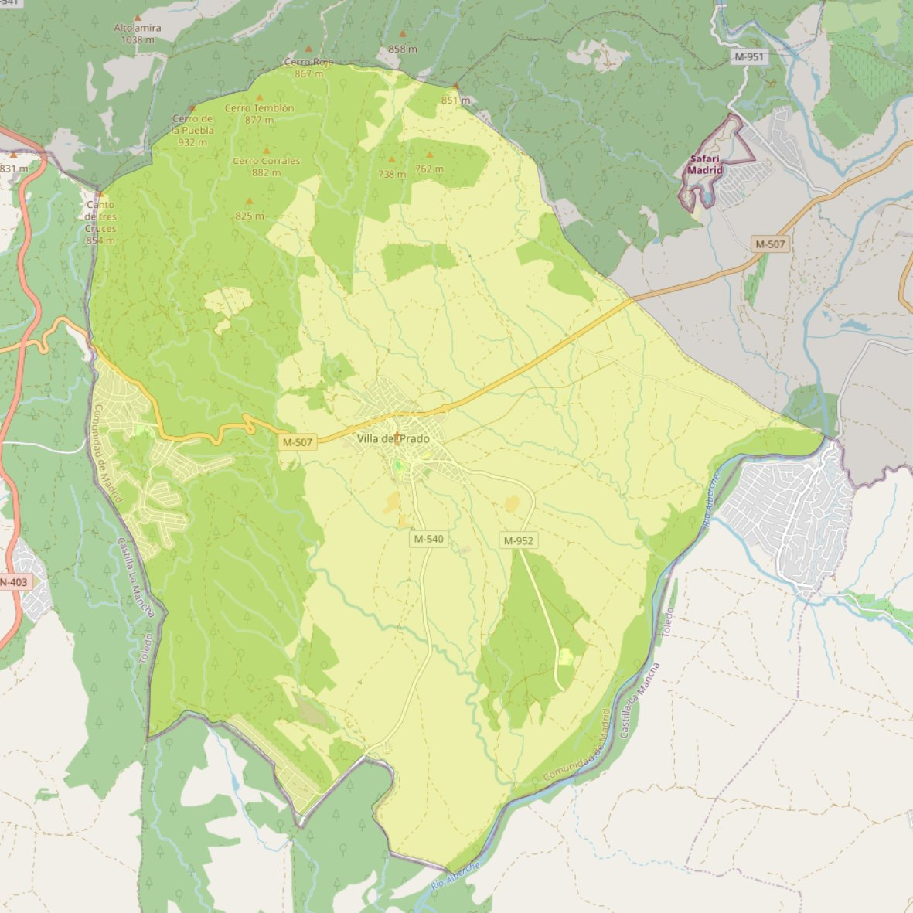

Santiago Apóstol

- Arciprestazgo
- Navalcarnero
- Población
- Villa del Prado
- Dirección postal
- Pza. de Santiago, s/n
- Código postal
- 28630
- Extensión
- 77,24 km² (7.724 ha)
- Teléfono
- 918 622 497
- Correo electrónico
- parroquiavilladelprado@gmail.com
Arciprestazgos y parroquias de la Diócesis de Getafe
